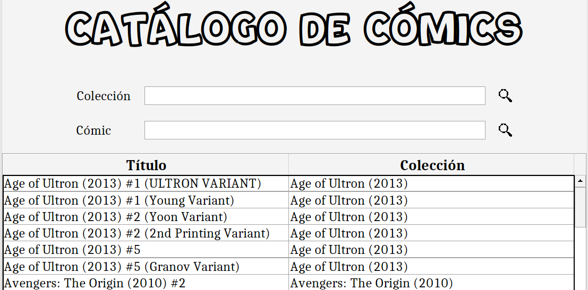

Busca de cómics

Esta pantalla permite a visualización dos cómics existentes na librería a partir da realización dun filtrado segundo colección
do cómic ou título de cómic. Os datos son mostrados nunha táboa.
Por outra banda, tras facer dobre clic sobre un cómic na táboa, ábrese un pequeno diálogo onde se mostran os detalles do cómic seleccionado,
incluíndo na parte inferior a imaxe da portada do cómic (á esquerda) e o nome e imaxe da portada da súa colección (á dereita).
O seu aspecto é o seguinte: